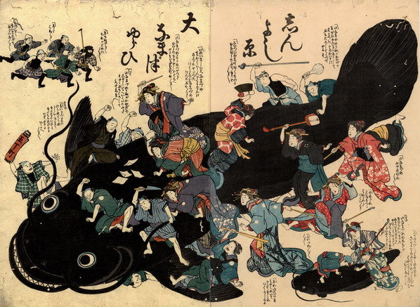

地震で被害をうけた吉原の遊女や客たちが、三味線や枕などを振り上げて、大鯰に殴りかかっている。鯰は口を開けて歯を覗かせており、花魁に乗られて喜んでいる。
出典：親書誌：U426_nichibunken_0183：しんよし原大なまづゆらひ；シンヨシワラオオナマズユライ／日付：2010／資源識別子：U426_nichibunken_0183_0001_0000
Copyright (c)2010- International Research Center for Japanese Studies, Kyoto, Japan. All rights reserved.